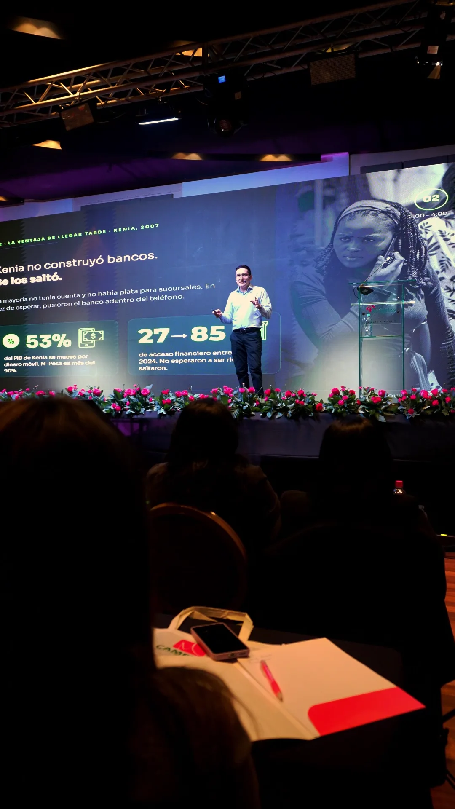

Protección seria
Seguridad de nivel corporativo, sin necesitar un departamento entero.
Inicio›Tecnología
La caja de herramientasDominamos las mismas herramientas que usan las empresas más avanzadas del mundo, muchas de código abierto para que nada te ate.
«Si tu empresa no tiene la infraestructura digital mínima, podemos empezar por ahí.» Johnny Ferrante
Ninguna de las herramientas de arriba sirve sola. Si los datos no están, si el proceso no existe o si el embudo comercial todavía se maneja a mano, el primer trabajo es ese — y está bien empezar ahí.
Elegimos el modelo y la herramienta correcta para cada trabajo, no la que nos conviene vender. Buena parte del stack es libre, así que el día que quieras seguir por tu cuenta, podés.
La tranquilidad también es seguridad. Operamos junto a Sapien9, con experiencia de nivel enterprise en Estados Unidos, para blindar tu operación.
Confirmar con Sapien9 el uso de su nombre
Seguridad de nivel corporativo, sin necesitar un departamento entero.
Auditamos antes de publicar: tus accesos, tus pagos y los datos de tus clientes.
Buenas prácticas para operar con confianza y clientes exigentes.

Podemos mostrarte cualquiera de nuestros sistemas en la reunión, con datos reales corriendo.
Conversemos →El stack completo sale textual del PDF de capacidades.
Nuevo · «Si no hay base, no hay IA que valga»ia 2 ferrante, que no estaba usado en ningún lado. La cita, el «es un proceso» y el «que opere todo el año» son textuales de él.